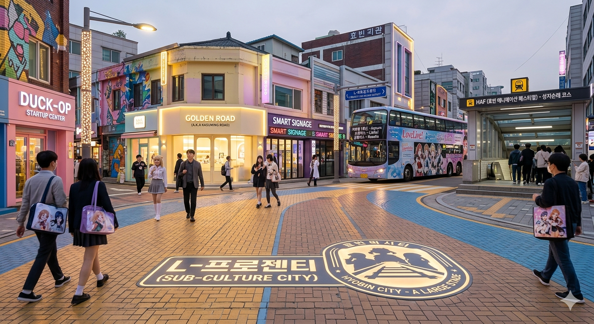
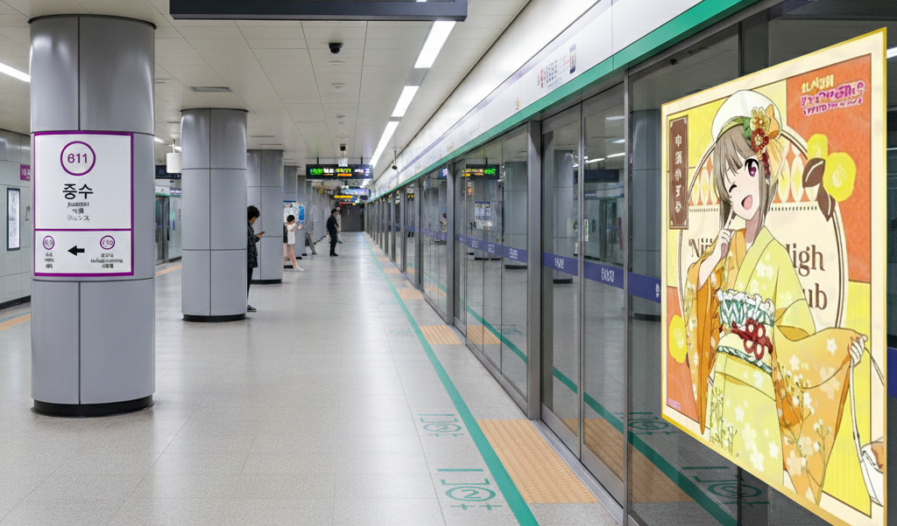

문화수도 효빈

아시아 융복합 문화의 중심,
문화수도 효빈
과거 단순한 항만·공업 도시를 넘어, 서브컬처와 대중예술이 공존하는 글로벌 특화 문화 랜드마크로 완벽하게 탈바꿈했습니다. 도시 전체가 하나의 거대한 축제이자 성지가 되는 기적, 효빈광역시에서 만나보세요.
핵심 전략 : L-Project (도시 전역 성지순례화)

도시 전체를 하나의 거대한 '성지'로 설계하다
민선 8기 박효빈 시정의 핵심 문화 공약인 'L-Project'는 효빈시 전역의 지명, 교통 인프라, 관광 명소를 서브컬처 문화와 유기적으로 결합하는 초대형 융복합 도시 마케팅입니다. 과거 낙후되었던 구도심과 상권을 글로벌 관광객들이 열광하는 '성지순례 코스'로 탈바꿈시켜 지역 경제의 르네상스를 이끌어내고 있습니다.
- 지명(안천구 이자동, 북구 고송동 등)과 애니메이션 세계관의 완벽한 융합 및 특화 관광 라인 개발
- 일본 누마즈, 도쿄(아키하바라), 오사카 등 글로벌 서브컬처 중심 도시와의 자매결연 및 성지 벤치마킹
아시아 최대 규모의 축제 : HAF
효빈 애니메이션 페스티벌
(Hyobin Animation Festival)
매년 8월 개최되는 HAF는 2006년 박현만 전 시장 재임기 제1회 행사를 시작으로, 현재는 아시아를 넘어 전 세계 팬덤이 집결하는 글로벌 융복합 서브컬처 축제로 성장했습니다. 한때 모 시장의 탄압으로 존폐 위기를 겪기도 하였으나, 성숙한 시민들의 지지와 현 시정부의 전폭적인 예산 지원(시티투어 버스 래핑, 종합터미널 테마관 운영 등)에 힘입어 효빈시를 상징하는 명실상부한 국경일급 행사로 도약했습니다.

주요 문화·관광 인프라

효빈문화공원
도심 한복판에 조성된 초대형 녹지 휴식 공간. 과거 버스 회사(두청운수) 본사 터를 밀어버리고 조성되었으며, 현재는 대형 야외 공연장과 산책로가 완비되어 HAF 개막식 및 시민 문화 행사의 메인 무대로 활용됩니다.

제2여객터미널 문화콤플렉스
동북아 해상 여객의 허브이자 바다를 품은 복합 문화 공간. 내부에는 미디어아트 갤러리와 오션뷰 테마 카페가 입점해 있으며, 밤에는 세계빛도시연합(LUCI) 기준을 충족하는 환상적인 미디어 파사드가 펼쳐집니다.

도시철도 테마역사 & 노면전차
단순히 이동수단을 넘어 그 자체로 관광 상품이 된 인프라. 레트로 감성의 7호선(노면전차)은 전 구간이 낭만적인 풍경을 제공하며, 1호선과 8호선의 주요 환승역들은 각기 다른 서브컬처 테마관으로 꾸며져 있습니다.
성숙한 시민 의식, '항해사'의 힘
문화수도 효빈을 지탱하는 가장 큰 원동력은 다름 아닌 효빈 시민들의 높은 문화적 포용성입니다. 과거 특정 정치 세력에 의해 문화 탄압과 교통 파탄을 겪었던 쓰라린 경험은, 오히려 시민들을 단합하게 만들었습니다. 현재 효빈의 공식 팬덤이자 자발적 시민 모임인 '항해사(Navigators)'는 대규모 축제 후 쓰레기 자진 수거, 질서 유지 캠페인, 약자 배려 등 완벽한 자정 작용을 보여주며, 글로벌 관광객들에게 '다시 찾고 싶은 따뜻한 도시'의 인상을 심어주고 있습니다.